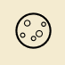

WADCoin
About Us
WADCoin is a non-profit organisation that aims to make cryptocurrency trading accessible to everyone. The problem we aim to tackle is one that many individuals can relate to - being too fearful to start trading cryptocurrency or lacking the knowledge to do it well. Through a number of features that tackle these two root issues, WADCoin teaches, encourages, and exposes you to the world of cryptocurrency trading. Take a look around and contact us if you require any further assistance!
Contact Us
WADCoin HQ, Singapore Management University
81 Victoria St, Singapore 188065
Tel: +65 9123 4567
Email: wadcoin@smu.edu.sg
Follow Us

© 2021 WADCoin. All Rights Reserved.